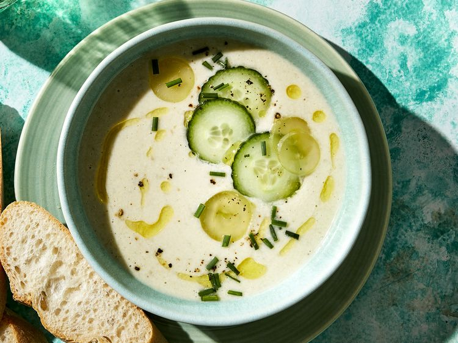

Cheeseburger Soup

Description
Ingredients
- 4 tablespoons butter, divided
- 0.5 pound lean ground beef
- 0.75 cup chopped onion
- 0.75 cup shredded carrots
- 0.75 cup chopped celery
- 1 teaspoon dried basil
- 1 teaspoon dried parsley
- 4 cups cubed potatoes
- 3 cups chicken broth
- 0.25 cup all-purpose flour
- 1.5 cups milk
- 2 cups cubed Cheddar cheese
- 0.25 cup sour cream
Direction
- Melt 1 tablespoon butter in a large pot over medium heat; add ground beef, onion, carrots, and celery. Cook and stir until beef is browned and crumbly, 5 to 7 minutes.
- Stir in basil and parsley. Add potatoes and broth and bring to a boil; reduce heat to low and simmer until potatoes are tender, 10 to12 minutes.
- Melt remaining 3 tablespoons butter in a small saucepan over medium heat. Add flour and whisk until smooth, about 1 minute. Gradually whisk in milk; simmer and stir until sauce is thick and smooth.
- Stir sauce into soup, stirring constantly. Bring to a boil; reduce heat to low and stir in cheese until melted. Add sour cream; stir until just heated through.
- Serve hot and enjoy!
White Gazpacho

Description
Ingredients
- 12 slices Italian bread, crusts removed, torn into small pieces
- 2/3 cup raw cashews
- 2 cups cold water
- 2 medium English cucumbers, peeled and chopped
- 1 1/2 cups green grapes
- 2 cloves garlic
- 2 tablespoons sherry vinegar
- 2 1/2 teaspoons kosher salt
- 1/3 cup extra virgin olive oil, plus more for drizzling
- Chives, thinly sliced green grapes, and/or thinly sliced cucumbers, for garnish
Direction
- Let bread, cashews, and water stand in a high-powered blender 5 minutes.
- Add chopped cucumbers, grapes, garlic, vinegar, and salt to blender; purée until mostly smooth, about 1 minute. With motor running, drizzle in olive oil; purée until smooth, about 30 seconds more. Chill, covered, about 1 hour. Serve soup drizzled with additional olive oil and garnished with chives, sliced grapes, and/or sliced cucumbers.